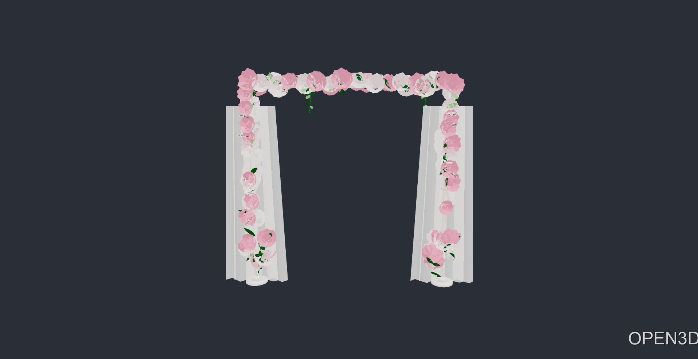

Augmented Reality Visualization
View virtual wedding decorations through your camera on supported Android devices.
Bring your church wedding vision to life with ACIM. Explore elegant wedding arrangements, customize decorative elements, and preview your designs through interactive 3D visualization and augmented reality.
For Android phones. AR works on supported devices.
ACIM is a mobile application for couples, wedding planners, and event coordinators. It simulates a church setting so everyone can see how decorations will look and agree on a plan before the day arrives. It was developed as a capstone project for Z&L Event Organizing Services.
View virtual wedding decorations through your camera on supported Android devices.
Adjust the available preset decorations and their placement.
Save customized previews and return to them later.
Send ratings, comments, and suggestions about the app.
Sample concepts shown as placeholders. Designs saved by app users are private and never shown here.
Roses, lilies, and hydrangeas on pedestals.

A floral arch at the church doors.
Carpet runners in blue, red, and brown.
Download and install the ACIM Android application.
Register or log in to your account.
Browse wedding design presets and try AR visualization.
Arrange your design, preview the result, and save it.
ACIM puts church wedding design, 3D preview, and AR visualization in your pocket.
Download APKAR features need an Android device that supports AR.
ACIM is an Android app for previewing church wedding designs in 3D and augmented reality, made for Z&L Event Organizing Services.
Yes. ACIM is built for Android phones and is installed from an APK file.
Use the Download APK button above, open the file when it finishes, and follow Android's prompts.
Only for the AR view. The 3D preview and other features do not depend on it.
Yes. Saved designs stay in your account so you can reopen them later.
Yes. You can adjust the available preset decorations and their placement.
Use the feedback option inside the app to send a rating and comments.